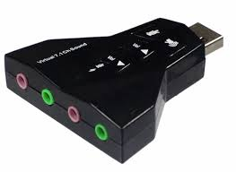
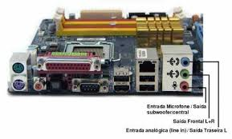
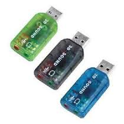
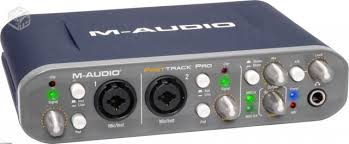

Placa de som é um dispositivo de hardware que envia e recebe sinais sonoros entre equipamentos de som e um computador executando um processo de conversão entre a forma digital e analógica para outros periféricos como fones de ouvido ou provendo interfaces para outros equipamentos digitais . |
||
|  |  | |
|  |  | |